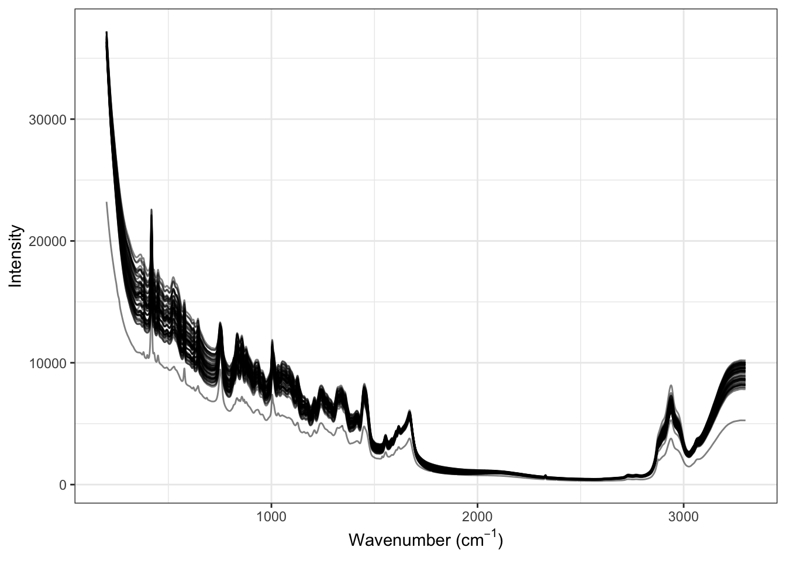
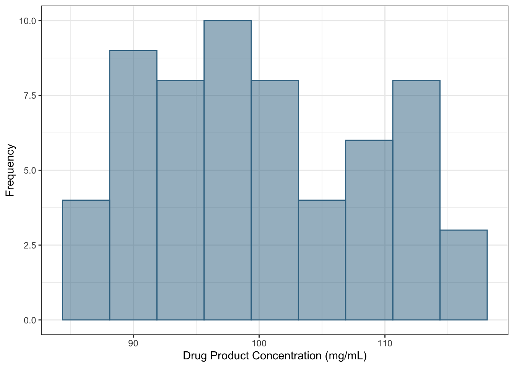

What They forgot to Tell You about Machine Learning with an Application to Pharmaceutical Manufacturing
Introduction
It feels like machine learning is everywhere. Within data analysis circles, almost every discussion involves how artificial intelligence and machine learning can change our lives. ChatGPT has turned up the noise in the conversation, and many people believe it should be applied.
This tutorial discusses more realistic approaches to using machine learning in preclinical applications, specifically Chemistry, Manufacturing, and Control (CMC) applications. The structure takes a relatively ordinary experimental problem (predicting drug concentration using spectroscopy) to frame a discussion about what machine learning can and can’t do. The idea is that most machine learning tutorials are not holistic examinations of how it actually works. While describing our analysis, we will highlight “what they forgot to tell you” about these tools.
As an example, it might make sense to discuss what the term “machine learning” actually means and under what circumstances it is appropriate. Historically, it usually connotes a specific type of black-block model such as a neural network or support vector machine. This leads us to our our first what they forgot (WTF):
WTF #1: The idea of a “machine learning model” is more defined by the project’s goal than the type of model.
It is difficult to argue that ML models focus on making the most accurate prediction of a new sample based on historical data. From that point of view, it could be any sufficiently complex model that performs sufficiently well. For example, a linear regression could fit this definition by including appropriate interactions or nonlinear terms, such as spline basis expansions. However…
WTF #2: You probably don’t need a complex black-box machine learning model.
Why not? First, not all problems are purely prediction problems. Most black-box models used for ML, such as neural networks or tree ensembles, are excellent at prediction but poor at almost anything else. We have seen applications where simple two-factor experimental data were analyzed using the random forest ensemble method instead of a simple ANOVA model. When it comes to judging what predictors are important to one another, many machine learning models are not very applicable.
Another reason is the potential limitations of experimental data. Sometimes, there is not enough data to support fitting such a model. For example, if an unreplicated response surface design were available, training a model and characterizing its efficacy with so few data points would be difficult.
For some, there is a significant urge to fit complex ML models since they often are the best choice in completely different domains. These domains often have access to excessive amounts of non-tabular data. These are data structures that do not naturally fit into the traditional rectangular data format (e.g., spreadsheets or database tables). The most common examples are images, video, and text. Given a large amount of data and complex enough models, we have tools that recognize if a cat is in a picture or can ingest a prompt and appear to complete a task correctly, such as answering a question or writing code. These models are often complex deep-learning neural networks.
A disconnect occurs because most experimental data used in CMC applications are tabular (or can be made to be tabular).
WTF #3: Unless you are analyzing images, it is exceedingly unlikely that a deep-learning model is your best option.
There is considerable anecdotal evidence that highly complex neural networks may not perform well for reasonably sized tabular data sets. This is currently being examined more formally in the literature (Kadra et al. 2021; Gorishniy et al. 2021; Borisov et al. 2022; Shwartz-Ziv and Armon 2022). Experimental data in preclinical applications can often exhibit colinearity between predictors and data measured with error. For novel data sets, we often do not know which predictors have a relationship with the outcome, increasing the possibility that some irrelevant predictors will be used to fit the model. In general, neural networks do not thrive in these environments (Kuhn and Johnson 2013).
Simply put, deep learning models can be effective in specific scenarios but are not appropriate in many other situations.
In this tutorial, we will discuss the process of constructing ML models for a specific data set. This process starts with understanding the available data’s predictors and response. After this initial understanding, we must then determine how to spend the data for the model-building process. Specifically, some data will need to be used to learn the generalizable characteristics that relate the predictors with the response (i.e., the training set). And other data will need to be used to assess how well the model predicts new data (i.e., the test set). After splitting the data, the predictors and/or the response may need to be preprocessed prior to modeling to enable better models to extract the predictive signal. After preprocessing, we can determine which types of predictive models to build. Each model has one or more parameters that determine how predictors are related to the response. In general, we do not know a priori which values of the tuning parameters are best. Therefore, we search a range of values to identify an optimal value. After identifying an optimal model, this model is then evaluated on the test data to determine if the model can be trusted to predict new, yet-to-be-seen samples reliably.
Let’s look a specific CMC application to further facilitate the discussion.
Experimental setting
The manufacturing process of a biological drug is complex and requires careful monitoring to ensure that the cells are efficiently creating the drug product. This process can be very challenging to systematically control since the incubation process can take many days, and cells are complex biological entities that are affected by slight changes to environmental conditions. To ensure that the bioreactor conditions are conducive to the cells producing product, key attributes are measured by sampling the contents of the bioreactor daily. If attributes are not in an acceptable range, then steps must be taken to alter the conditions of the bioreactor. Generally, the sooner the conditions can be adjusted, the better the quantity and quality of the final drug product. Measuring the attributes takes time. Therefore, there is usually a lag between the attribute measurements and the corresponding adjustment. This lag can lead to less and lower-quality product.
Raman spectroscopy is a tool that can measure chemical characteristics (i.e., a chemical fingerprint) of samples in real-time (Jesus, Löbenberg, and Bou-Chacra 2020; Esmonde-White, Cuellar, and Lewis 2022; Silge et al. 2022). Using the spectra in a predictive model of the characteristics of interest would enable real-time knowledge of and corresponding adjustments to the bioreactor, thus generating higher quality, larger volume drug product.
In the example outlined in this tutorial, several key input parameters were varied systematically across their operating ranges within each of the 60 small-scale bioreactors for producing a biological drug. Seven days after the start of the experiment, a sample was collected and analyzed by Raman spectroscopy. The concentration of the drug product in the sample was also measured. This analysis aims to understand how predictive Raman spectra can be of the drug product concentration. If there is a relationship, then the model could be used to signal if the bioreactor was insufficiently producing a product and prompting remedial steps to increase production.
Understanding the Data
The first step in any modeling process is to understand the available data.
WTF #4: the only way to be comfortable with your data is to never look at them.
In this application, there is one sample from each of 60 bioreactors. Raman spectroscopy has been applied to each sample, and the drug product concentration has been measured. Figure 1 displays the original Raman spectra. From this figure, we can see that there is an initial downward trend towards the middle of the wavenumbers, then an upward trend towards the higher wavenumbers. The intensities are not randomly scattered. Instead, there is a relationship across wavenumbers with intensity. This relationship indicates that wavenumber intensities are correlated with each other. In fact, the correlation between the majority of adjacent wavenumbers is greater than 0.99.
To illustrate this more clearly, let’s examine the relationship among wavenumber measurements for the first sample. For the first sample, the first 3000 lags are created. To create a lag, the data is shifted by a specified number of rows to create a new variable. For example, to create the first lag, the wavenumber measurements are shifted over by one wavenumber. To create the second lag, the measurements are shifed by two wavenumberes, and so on. Figure 2 illustrates the correlation between each subquent lag for the first 1000 lags. Clearly, close wavenumbers have high correlation, whereas far wavenumbers have low correlation. As we will see, understanding this characteristic will turn out to be very important when making decisions about how to pre-process the data prior to modeling and which models to train.
In addition to understanding the predictors, we should also understand characteristics of the response. Examining the response distribution can help determine if a transformation may be necessary or if there are samples that are unusual with respect to the majority of the data. Figure 3 presents the histogram drug product concentration across the samples. For this data, the distribution is approximately symmetric and has a range of 85 to 115. Based on this figure, a transformation does not appear to be necessary, and there are no samples that are unusual.

Data Spending
The primary objective of predictive modeling is to use the existing data to develop a model that predicts new samples as accurately as possible. To achieve this objective, a process must be implemented that avoids overfitting to the existing data (Kuhn and Johnson 2013; Hawkins 2004). An overfit model is one that accurately predicts the response for the data on which the model was trained but does not accurately predict new data. To avoid overfitting, we must construct a model-building process that mimics the prediction process for new samples. One way to do this would be to split the data into training and test sets. A model could be constructed with the training set, then predictive performance could be evaluated with the test set.
WTF #5: Always have an independent data set that can contradict what you think you may know.
However, most predictive models must be constructed using a variety of tuning parameter values. The test set would then need to be evaluated multiple times to assess predictive performance. When the test set is evaluated multiple times, we are essentially finding a model that fits the test set. This process leads to overfitting, and the model performance cannot be trusted to evaluate the predictive performance on new samples accurately. Therefore, a single training/test split will not be adequate for building predictive models. Moreover, it is important to understand that the test set should only be used once to evaluate the final selected models.
Instead of a single training/test split, we need a process that can be used to evaluate many tuning parameter values for each of many different models. Figure 4 illustrates a two-layered process that incorporates the use of resampling. The first layer splits the entire data set into a training and test set. In general, anywhere between 50% to 80% of the data is randomly selected for the training data, while the remaining data is placed in the test set. A random split may be adequate. However, we may desire that the training set and testing split data have similar characteristics. For example, it may be advantageous for the training and test sets to have a similar distribution of the response. If the response distribution is skewed, then it would be important that the training and test sets reflect the entirety of the distribution. Likewise, if there are characteristics or covariates in the data that should be proportionally represented, then the data should be split into the training and testing set using a stratified random approach.

The training data is split using resampling in the second layer of Figure 4. Cross-validation could be used in this layer, where the data is split into \(V\) folds. For example, if 10-fold cross-validation were used in this layer, then the training data would be partitioned into 10 folds. The analysis set for the first resample would contain 9 folds of the data, while the assessment set would contain 1 fold of the data. A model would be constructed using the 9 folds and would evaluated using the hold-out fold. To create the analysis set for the second resample, a different combination of 9-folds would be used to construct the model. The model would then be evaluated on the fold that was not used in the modeling. For illustration, Figure 5 provides an illustration of 3-fold cross-validation (although \(V = 10\) is a much better choice).

For the example presented here, a stratified random approach will be used to split the data into a training (75%) and a test (25%) set. The distribution of the response will be used as the stratification variable such that an equal proportion of samples will be randomly selected within each quartile of the distribution. When training models, we will compare the performance of 10-fold cross-validation as well as repeated 10-fold cross-validation.
Pre-processing
The predictors and response, in their original form, are usually not in the best form for enabling models to find an optimal predictive relationship. The original data may contain highly correlated predictors, predictors that lack information, missing values, multi-category predictors, or highly skewed predictors. Some models, such as those based on recursive partitioning algorithms, can handle most of these challenging characteristics. However, many models either cannot be built, or the predictive performance will be detrimentally impacted when one or more of these characteristics are present. As a simple example, consider a predictor that has three categories: Low, Mid, and High. The information, in this form, cannot be ingested by most models. Instead, the information needs to be converted into either an ordinal-scaled predictor or two binary variables. Missing data also wreaks havoc on predictive models because the models require non-missing information. Therefore, appropriate pre-processing steps must be taken before the model training.
WTF #6: The stereotypical concept of a model is confined to the supervised operation of estimating model parameters (e.g., slope and intercepts in linear regression).
However, it includes any serious data analysis steps before or after the stereotypical model fit. This can include steps such as PCA feature extraction, imputation, post hoc calibration, etc.
WTF #7: The operations that you apply to the predictors before the model are at least as important as which stereotypical model you use. Feature engineering is the process of representing the predictor data in a way that makes the model have to work the least to be effective.
References
Borisov, Vadim, Tobias Leemann, Kathrin Sessler, Johannes Haug, Martin Pawelczyk, and Gjergji Kasneci. 2022. “Deep Neural Networks and Tabular Data: A Survey.” IEEE Transactions on Neural Networks and Learning Systems, 1–21.
Esmonde-White, Karen A, Maryann Cuellar, and Ian R Lewis. 2022. “The Role of Raman Spectroscopy in Biopharmaceuticals from Development to Manufacturing.” Analytical and Bioanalytical Chemistry, 1–23.
Gorishniy, Yury, Ivan Rubachev, Valentin Khrulkov, and Artem Babenko. 2021. “Revisiting Deep Learning Models for Tabular Data.” Advances in Neural Information Processing Systems 34: 18932–43.
Hawkins, D. 2004. “The Problem of Overfitting.” Journal of Chemical Information and Computer Sciences 44 (1): 1–12.
Jesus, José Izo Santana da Silva de, Raimar Löbenberg, and Nadia Araci Bou-Chacra. 2020. “Raman Spectroscopy for Quantitative Analysis in the Pharmaceutical Industry.” Journal of Pharmacy and Pharmaceutical Sciences 23 (1): 24–46.
Kadra, Arlind, Marius Lindauer, Frank Hutter, and Josif Grabocka. 2021. “Regularization Is All You Need: Simple Neural Nets Can Excel on Tabular Data.” arXiv 536.
Kuhn, Max, and Kjell Johnson. 2013. Applied Predictive Modeling. Springer.
Shwartz-Ziv, Ravid, and Amitai Armon. 2022. “Tabular Data: Deep Learning Is Not All You Need.” Information Fusion 81: 84–90.
Silge, A, Karina Weber, D Cialla-May, L Müller-Bötticher, D Fischer, and J Popp. 2022. “Trends in Pharmaceutical Analysis and Quality Control by Modern Raman Spectroscopic Techniques.” TrAC Trends in Analytical Chemistry 153: 116623.